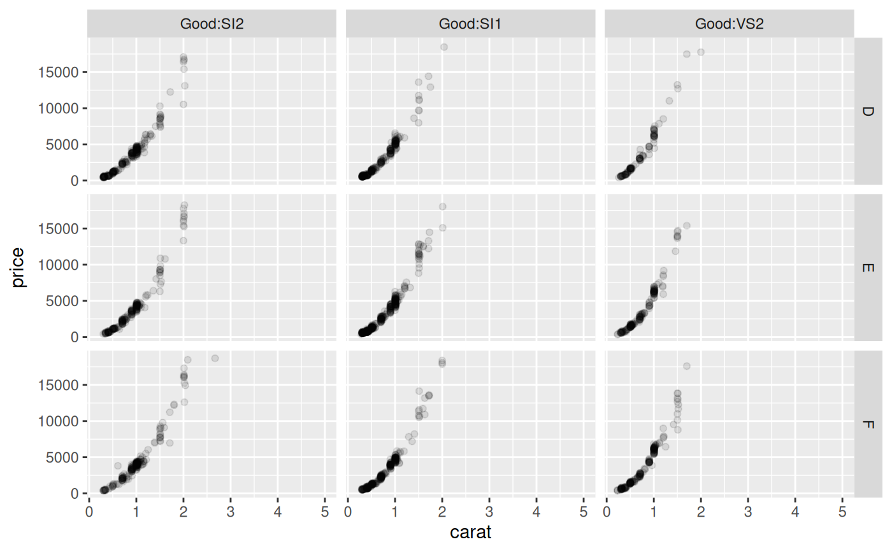

facet_grid_paginate.RdThis extension to ggplot2::facet_grid() will allow you to split
a facetted plot over multiple pages. You define a number of rows and columns
per page as well as the page number to plot, and the function will
automatically only plot the correct panels. Usually this will be put in a
loop to render all pages one by one.
facet_grid_paginate(facets, margins = FALSE, scales = "fixed", space = "fixed", shrink = TRUE, labeller = "label_value", as.table = TRUE, switch = NULL, drop = TRUE, ncol = NULL, nrow = NULL, page = 1, byrow = TRUE)
| facets | This argument is soft-deprecated, please use |
|---|---|
| margins | Either a logical value or a character
vector. Margins are additional facets which contain all the data
for each of the possible values of the faceting variables. If
|
| scales | Are scales shared across all facets (the default,
|
| space | If |
| shrink | If |
| labeller | A function that takes one data frame of labels and
returns a list or data frame of character vectors. Each input
column corresponds to one factor. Thus there will be more than
one with formulae of the type |
| as.table | If |
| switch | By default, the labels are displayed on the top and
right of the plot. If |
| drop | If |
| ncol | Number of columns per page |
| nrow | Number of rows per page |
| page | The page to draw |
| byrow | Should the pages be created row-wise or column wise |
If either ncol or nrow is NULL this function will
fall back to the standard facet_grid functionality.
n_pages() to compute the total number of pages in a paginated
faceted plot
Other ggforce facets: facet_stereo,
facet_wrap_paginate,
facet_zoom
# Draw a small section of the grid ggplot(diamonds) + geom_point(aes(carat, price), alpha = 0.1) + facet_grid_paginate(color ~ cut:clarity, ncol = 3, nrow = 3, page = 4)